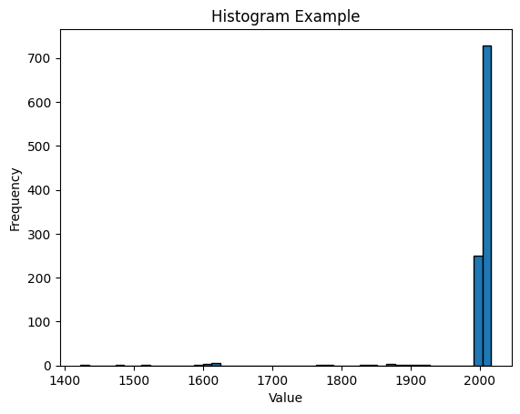
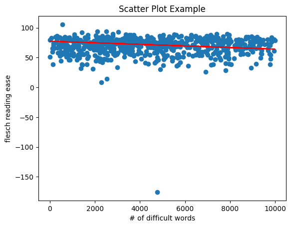
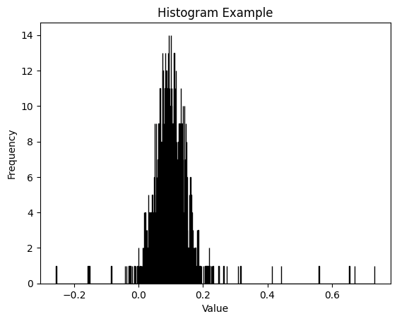
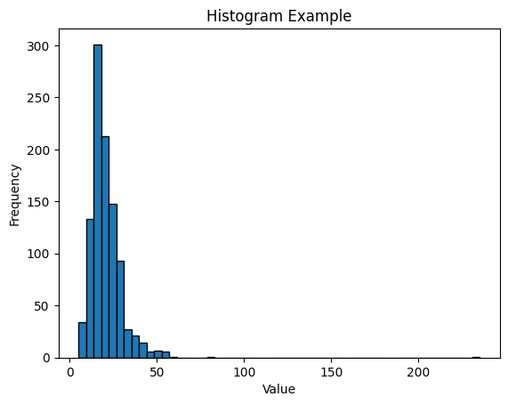

import pandas as pdfile_path ='classics.csv'# Read the CSV file into a pandas DataFramedf = pd.read_csv(file_path)# Check if the file is loaded sucessfullydf.head()
bibliography.congress classifications 159
bibliography.languages 0
bibliography.subjects 155
bibliography.title 0
bibliography.type 0
metadata.downloads 0
metadata.id 0
metadata.rank 0
metadata.url 0
bibliography.author.birth 0
bibliography.author.death 0
bibliography.author.name 0
bibliography.publication.day 0
bibliography.publication.full 0
bibliography.publication.month 0
bibliography.publication.month name 0
bibliography.publication.year 0
metadata.formats.total 0
metadata.formats.types 0
metrics.difficulty.automated readability index 0
metrics.difficulty.coleman liau index 0
metrics.difficulty.dale chall readability score 0
metrics.difficulty.difficult words 0
metrics.difficulty.flesch kincaid grade 0
metrics.difficulty.flesch reading ease 0
metrics.difficulty.gunning fog 0
metrics.difficulty.linsear write formula 0
metrics.difficulty.smog index 0
metrics.sentiments.polarity 0
metrics.sentiments.subjectivity 0
metrics.statistics.average letter per word 0
metrics.statistics.average sentence length 0
metrics.statistics.average sentence per word 0
metrics.statistics.characters 0
metrics.statistics.polysyllables 0
metrics.statistics.sentences 0
metrics.statistics.syllables 0
metrics.statistics.words 0
dtype: int64
We see 159 missing data in “bibliography.congress classifications” column and 155 in “bibliography.subjects” colum.
How many authors are in the dataset?
len(df["bibliography.author.name"].unique())
555
There are 555 authors in this dataset.
Number of publications in each year?
By making the number of bins equal to the number of total unique value, we get a histogram like this:
import matplotlib.pyplot as pltdt1 = df["bibliography.publication.year"]# Create a histogramplt.hist(dt1, bins=len(df["bibliography.publication.year"].unique()), edgecolor='black')# Add labels and titleplt.xlabel('Value')plt.ylabel('Frequency')plt.title('Histogram Example')# Show the plotplt.show()

We see the publication year is highly skewed to the left, where we observe most of books in this dataset are published in late 20th centery or after 2000s. In other words, most of them are published in recent 30 years.
Relationship between number of difficul words and reading ease (metrics.difficulty.flesch reading ease)?
import numpy as npfrom sklearn.linear_model import LinearRegressionx = df["metrics.difficulty.difficult words"]y = df["metrics.difficulty.flesch reading ease"]x = [xi for xi in x if xi <10000]y = [y[i] for i, xi inenumerate(x) if xi <10000]# Create a scatter plotplt.scatter(x, y)# Add labels and titleplt.xlabel('# of difficult words')plt.ylabel('flesch reading ease')plt.title('Scatter Plot Example')lm = LinearRegression()x = np.array(filtered_x).reshape(-1, 1)y = np.array(filtered_y).reshape(-1, 1)lm.fit(x,y )# Get the coefficients of the linear modelslope = lm.coef_[0]intercept = lm.intercept_plt.plot(x, slope * x + intercept, color='red', label='Regression Line')# Show the plotplt.show()

slope
array([-0.00131749])
The slope is -0.00131749, which says there isn’t an obvious negative relation between number of difficult words and flesch reading ease. This contradicts to my expectation, that there must be a obvious negative relationship bewteen this two variables.
dt = df["metrics.sentiments.polarity"]# Create a histogramplt.hist(dt, bins=len(df["metrics.sentiments.polarity"].unique()), edgecolor='black')# Add labels and titleplt.xlabel('Value')plt.ylabel('Frequency')plt.title('Histogram Example')# Show the plotplt.show()

Sentiments polarity shows to center around 0.1 with a seemingly normal distribution.
dt = df["metrics.statistics.average sentence length"]# Create a histogramplt.hist(dt, bins=len(df["metrics.statistics.average sentence length"].unique()), edgecolor='black')# Add labels and titleplt.xlabel('Value')plt.ylabel('Frequency')plt.title('Histogram Example')# Show the plotplt.show()

Majority of sentence length stay between 0 and 50 with a center around 30 (words).